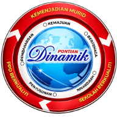

Pejabat Daerah & Tanah Pontian · Johor Darul Ta'zimPembangunan sistem ACLIS telah berjaya diselesaikan sepenuhnya dari segi fungsi. Kesemua 6 modul teras telah dibangunkan, diuji secara unit, dan berfungsi dengan baik. Sistem kini berada dalam fasa pengemasan UI/UX sebelum peralihan ke pengujian pengguna sebenar (Julai 2026).
| Fasa | Huraian | Status | Tempoh |
|---|---|---|---|
| 1 | Analisis Keperluan & Perancangan Sistem | ✓ Selesai | Jun 2026 |
| 2 | Reka Bentuk Seni Bina, Skema DB & UI | ✓ Selesai | Jun 2026 |
| 3 | Pembangunan Semua Modul + Pengujian Unit | ✓ Selesai | Jun 2026 |
| 4 | Pengujian Pengguna (SUS Usability Testing) | ⏳ Belum Bermula | Jul–Ogos 2026 |
| 5 | Deployment ke Production & Penyelenggaraan | ⏳ Belum Bermula | Sep 2026 |
| # | Modul | Fungsi Utama | Status |
|---|---|---|---|
| 1 | Profil Kampung | CRUD kampung, koordinat GPS, peta interaktif Leaflet, profil mukim | ✓ Siap |
| 2 | Data Penduduk & B40 | Rekod penduduk berstruktur, penanda B40, senarai, tambah/edit/padam | ✓ Siap |
| 3 | Laporan Bulanan | Penyerahan laporan digital, aliran draft → submitted, ringkasan AI (JamAI) | ✓ Siap |
| 4 | Isu Komuniti | Log isu, kategorisasi AI, pandangan peta dengan penanda status, pengurusan status | ✓ Siap |
| 5 | Papan Pemuka | Statistik langsung, carta bar status isu/laporan, amaran laporan lewat, analitik AI | ✓ Siap |
| 6 | Sokongan AI (JamAI Base) | Ringkasan laporan bulanan, kategorisasi isu automatik, insight tren komuniti | ✓ Siap |
| Ciri | Justifikasi | Status |
|---|---|---|
| Pengurusan Pemimpin (CRUD + foto) | Keperluan operasi sebenar klien — data pemimpin belum ada sistem digital | ✓ Siap |
| Sistem Penilaian Pemimpin | Sokongan kepada proses penilaian tahunan sedia ada di Pejabat Daerah | ✓ Siap |
| Kawalan Akses RBAC (3 peranan) | Keselamatan data — admin_daerah, penghulu, ketua_kampung dengan skop berbeza | ✓ Siap |
| Pandangan Peta Isu (Leaflet) | Visualisasi geospatial — membantu admin kenal pasti kluster isu komuniti | ✓ Siap |
| Log Audit Mutasi | Akauntabiliti PDPA 2010 — rekod siapa tukar apa dan bila | ✓ Siap |
| Antara Muka Berjenama (UI/UX) | Reka bentuk profesional monokrom dengan tipografi editorial Libre Baskerville + Nunito | ✓ Selesai (Jun 2026) |
toast.promise untuk maklum balas pengguna yang konsisten.
| Lapisan | Teknologi | Justifikasi Pemilihan |
|---|---|---|
| Frontend | Next.js 15 + TypeScript | SSR/SSG untuk SEO, TypeScript untuk keselamatan jenis, ekosistem React matang |
| Komponen UI | shadcn/ui + Tailwind CSS 4 | Komponen boleh disesuaikan penuh, tiada kebergantungan vendor, senang branding |
| Backend | FastAPI + Python 3.12 | Dokumentasi API automatik, pengesahan Pydantic, prestasi tinggi, mudah diuji |
| Database + Auth | Supabase (PostgreSQL) | Auth siap guna, RLS bersepadu, storan fail; jimat masa infrastruktur |
| AI | JamAI Base | Platform AI Malaysia-hosted; sesuai untuk konteks pentadbiran awam tempatan |
| Peta | Leaflet.js + OpenStreetMap | Sumber terbuka, tiada kos API, sokongan koordinat GPS untuk isu dan kampung |
| Kawalan | Pelaksanaan |
|---|---|
| Pengesahan | Supabase JWT (HS256, audience "authenticated") — setiap permintaan API disahkan |
| Autoriti Peranan | Token tanpa peranan sah → 403 Forbidden (prinsip least privilege) |
| Pengasingan Data | Scope resolver per-request — data ditapis mengikut kampung/mukim pengguna |
| Lapisan DB | Row-Level Security aktif pada semua jadual Supabase |
| Pengepala HTTP | X-Content-Type-Options, X-Frame-Options, HSTS, Referrer-Policy |
| Log Audit | aclis_audit_log — aktor, entiti, medan ditukar, cap masa UTC |
| Perlindungan PII | Fail CSV tidak dikemit dalam git; No. KP tidak dicatat dalam log audit |
| Modul Diuji | Skop Ujian | Status |
|---|---|---|
| Pengesahan (Auth) | Pengesahan JWT, semak audience, peranan, cache TTL scope | ✓ Lulus |
| Kawalan Akses (Scoping) | Penapis data mengikut peranan — admin, penghulu, ketua_kampung | ✓ Lulus |
| Kampung API | CRUD kampung, koordinat GPS, paginasi, 403/404 | ✓ Lulus |
| Pemimpin API | CRUD pemimpin, muat naik foto, pautan kampung, kawalan peranan | ✓ Lulus |
| Laporan API | Cipta, kemaskini, penghantaran, auto-set submitted_at, ringkasan AI | ✓ Lulus |
| Isu API | Log isu, tukar status, rekategorisasi AI, pandangan koordinat | ✓ Lulus |
| Statistik API | Kiraan kampung/pemimpin/isu/laporan, breakdown status, AI insights | ✓ Lulus |
| Penilaian API | CRUD penilaian, kawalan akses admin sahaja | ✓ Lulus |
Metodologi yang dicadangkan: System Usability Scale (SUS) — soal selidik piawai 10 soalan dengan skala Likert 1–5.
| # | Senario Pengujian | Peranan |
|---|---|---|
| 1 | Mendaftar masuk dan melayari papan pemuka | Semua peranan |
| 2 | Tambah kampung baharu dengan koordinat GPS menggunakan peta | Admin Daerah |
| 3 | Hantar laporan bulanan untuk kampung | Ketua Kampung |
| 4 | Rekod isu komuniti baharu dengan lokasi | Ketua Kampung |
| 5 | Semak senarai kampung dan status laporan dalam mukim | Penghulu |
| Isu | Tahap | Tindakan Diperlukan |
|---|---|---|
| 3 migrasi DB belum diaplikasi ke Supabase production (0004, 0005, 0006) | Sederhana | Perlu dilaksanakan sebelum demo kepada klien |
| Sejarah git mengandungi CSV data PII lama (sebelum dibuang) | Rendah | Scrub menggunakan git filter-repo sebelum repo dijadikan awam |
| Pengujian Row-Level Security belum dijalankan pada Supabase sebenar | Sederhana | Dirancang selepas sesi pengujian pengguna selesai |
| Integrasi JamAI Base bergantung pada token API luaran | Rendah | Sistem berfungsi tanpa AI; paparan "Tiada data" jika token tidak dikonfigurasikan |
| Tarikh | Pencapaian |
|---|---|
| Jun 2026 | Ciri peta Leaflet untuk isu komuniti dan kampung (koordinat GPS, klik untuk letak pin) |
| Jun 2026 | Pengurusan penduduk lengkap (CRUD) dalam halaman detail kampung |
| Jun 2026 | Amaran laporan lewat pada papan pemuka admin |
| Jun 2026 | Penguatan keselamatan — RLS, pengepala HTTP, log audit, pembuangan fail PII |
| Jun 2026 | Reka bentuk semula UI — tema monokrom, tipografi editorial, halaman log masuk baharu |
| Jun 2026 | Penambahbaikan UX — toast.promise semua borang, sidebar responsif, mod gelap betul |
Sistem ACLIS telah menunjukkan kemajuan yang konsisten dan menepati skop asal projek. Kesemua modul teras telah berfungsi dan diuji. Tumpuan kini beralih kepada memastikan sistem mesra pengguna sebelum diserahkan kepada kakitangan Pejabat Daerah Pontian.
Pembangunan sistem ini menggabungkan amalan kejuruteraan perisian moden — pengujian unit komprehensif, keselamatan berlapis, dan seni bina yang boleh diselenggarakan — dengan keperluan khusus konteks pentadbiran awam Malaysia. Integrasi AI melalui JamAI Base menambah nilai kepada proses sedia ada tanpa menggantikan pertimbangan manusia.
Langkah kritikal seterusnya ialah sesi pengujian pengguna sebenar dengan kakitangan Pejabat Daerah Pontian bagi memastikan sistem benar-benar membantu aliran kerja harian mereka, bukan sekadar memenuhi keperluan teknikal semata-mata.
| Maklumat Laporan | |
|---|---|
| Sistem | AI Community Leadership Intelligence System (ACLIS) |
| Pembangun | Muhammad Hafizuddin Bin Abdul Hamid (DI230052) · piz230601@gmail.com |
| Klien | Pejabat Daerah & Tanah Pontian, Johor |
| Tarikh Laporan | 30 Jun 2026 |
| Repositori | Peribadi — diserahkan atas permintaan penyelia |
| Versi Sistem | v1.0 (pre-production) |
Muhammad Hafizuddin Bin Abdul Hamid (DI230052)
Pembangun Sistem & Pelajar PSM
piz230601@gmail.com
Penyelia
Tandatangan & Tarikh